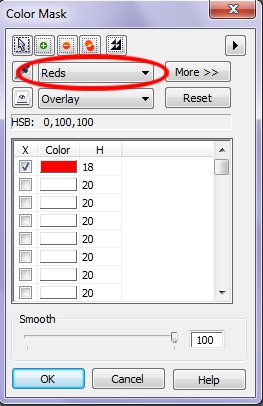
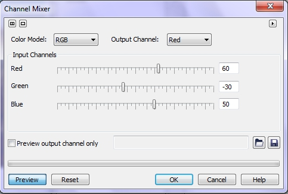
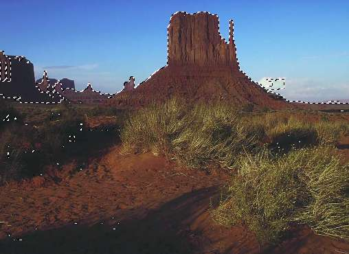

Использование фильтра Channel Mixer для цветовой коррекции
Наверное многие часто сталкивались с проблемой нежелательного оттенка на фотографиях. И зачастую бороться с ним проблематично по многим причинам. Одна из таких причин трудность в выделении участков с избытком какого-либо цвета. Данный урок рассказывает о том, как это сделать силами PHOTO-PAINT Х5, хотя версия особого значения не имеет.
Задача понятна - убрать в изображении избыток цвета.
Исходное изображение показано на рис. 1.
Очевиден избыток красного цвета во всем изображении. Нам нужно выделить красные участки изображения для дальнейшей их коррекции.
1. Выполните команду Mask > Color Mask (Маска > Цветовая маска). В диалоговом окне Color Mask (Цветовая маска), в раскрывающемся списке выбора цвета (рис. 2), выбираем пункт Reds (Красные) и жмем ОК.

Photo-Paint выделит участки изображения с красным цветом.
2.Теперь нам нужно избавится от нежелательных оттенков. Используем фильтр Channel Mixer (Канальный миксер), для чего выполните команду Adjust > Channel Mixer (Настройка > Канальный миксер). Настройки в окне фильтра показаны на рис. 3).

После применения фильтра Channel Mixer (Канальный миксер), изображение станет, как на рис. 4. Однако после применения фильтра, изображение стало темным и некоторые детали изображения стали плохо просматриваемыми.

3. Исправим эту ситуацию с помощью фильтра Brightness/Contrast/Intensity (Яркость/Контрастность/Интенсивность). Для вызова фильтра используем команду Adjust > Brightness/Contrast/Intensity (Настройка > Яркость/Контрастность/Интенсивность). В окне фильтра устанавливаем значение параметра Intensity (Интенсивность) равным 30.
4. Теперь нам остается только удалить маску, для чего нажмите комбинацию клавиш Ctrl + R. Окончательный результат показан на рис. 5.
После нашей коррекции, нежелательный оттенок ушел, изображение стало мягче и смотрится гораздо лучше исходного.
Данная методика позволит вам избавляться от нежелательных оттенков в различиных ситуациях. Например, когда на фото лицо имеет нежелательную красноту. Однако в каждом конкретном случае надо смотреть, какой фильтр лучше использовать после создания маски.
Полезный урок :)
Спасибо!